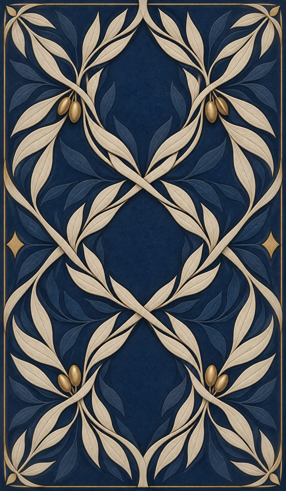
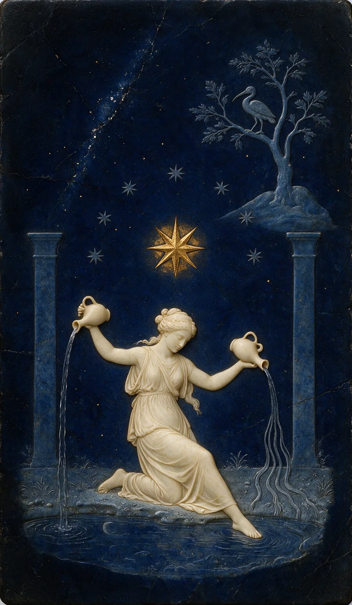

Ваше читання однієї карти
Прочитати повне тлумачення +
Запитання для себе
У символах цієї карти +
Дослідити бібліотеку Таро ↗Зберігається лише у цьому браузері на цьому пристрої. Завантажте копію для резервного збереження.

Таро для особистих роздумів
Особиста практика Таро
Ілюстрована колекція · не Ваше особисте читання
МИТЬ, ЩОБ ПОБАЧИТИ СЕБЕ
Таро й астрологія для розмірковувань.
Ваш власний погляд, один невеликий крок
і місце, куди можна повернутися.
Безкоштовні тлумачення · Без реєстрації
Мить для вас
Можна прийти із запитанням або просто зупинитися на мить.
Усі формати читання ↗Дозвольте увазі зосередитися
Оберіть карту, яка привертає вашу увагу.
Приклад, перш ніж почати
«Що потребує моєї уваги, поки я обмірковую зміни?»
Приклад читання · це не ваша особиста карта.
IX / ВІДЛЮДНИК
Трохи відстані від шуму. Відлюдник запрошує почути власні думки, перш ніж шукати ще одну пораду.
Що ви вже знаєте, коли навколо тихо?
Прогуляйтеся в тиші, перш ніж просити ще одну пораду. Помітьте думку, яку хочете зберегти.
Особиста практика у трьох моментах
Що потребує моєї уваги,
поки я обмірковую зміни?
Щось незавершене. Або просто те, як ви почуваєтеся сьогодні.

78 карт. Ваш власний вибір.Відкрийте її. Прочитайте значення поруч зі своїм запитанням.
Трохи простору,
перш ніж ухвалити рішення.
Думку, наступний крок і місце, куди можна повернутися.
Ілюстровані приклади · ваше читання починається з вашого запитання та власного вибору карти.
Форма запитання
Дайте кожній частині запитання своє місце на столі.
Оберіть позицію карти, щоб побачити її запитання.
ОДНЕ ЗАПИТАННЯ · ТРИ ПЕРСПЕКТИВИ
Ситуація, те, що її ускладнює, і один корисний крок уперед.
Який аспект ситуації потребує уваги?
Безкоштовно — із власним запитанням.
Ваш альманах і жива колода
Збережіть запитання. Запишіть, що сталося згодом. Нехай карта набуває значення, яке належить вам.
ІЛЮСТРОВАНИЙ АЛЬМАНАХ · ПРИКЛАД ЗАПИСІВ
«Я весь час прошу поради. Можливо, спочатку варто почути себе».
Тиха прогулянка. Без подкастів. Поки що без рішення.
Ваші власні записи зберігаються в цьому браузері на цьому пристрої.
Вчіться помічати
Ліхтар. Поріг. Відкрита долоня. Простежте символи в колоді й подивіться, що привертає вашу увагу.
Дослідити мову символів↗Ваше читання однієї карти
Зберігається лише у цьому браузері на цьому пристрої. Завантажте копію для резервного збереження.
Ваш особистий альманах
Читання та роздуми — разом.
Записи про те, як змінюється ваш погляд.
Записи зберігаються у цьому браузері на цьому пристрої. Остання чернетка читання відновиться, коли ви повернетеся. Очищення даних браузера видалить записи.